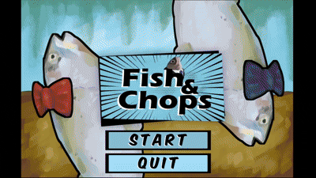
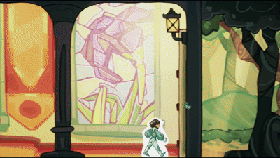
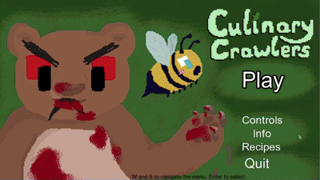
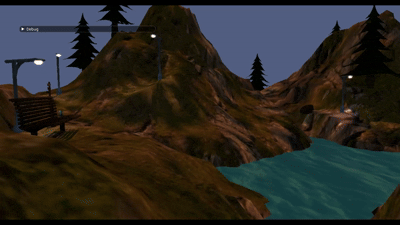
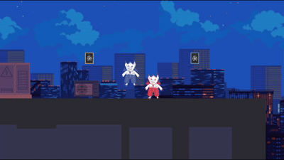

Projects

Nothing's Wrong in Subsistia
Professional Project University Module. Grade A
Runner up Team Project award at Gamebridge UK
Single player social deduction game. Play as the leader of a 50’s-Americana-Obsessed cult. Keep the faith of your family, and be wary of the traitor.
Worked in a team of 8 for a group project in university to create a game for a client with the brief 'Confined Environment'
Unity, C# - Gameplay Programming, Design
View on Itch
Wager of the Wolf
Game Programming and System Architectures University module. Grade A
Team of four programmers using Sony PS5 development kits
2.5D platformer where you play as a wolf chasing a vampire who stole his teeth!
C++ - Gameplay programming, Engine Programming, Optimisation

weeBitEngine
Game Engine Development University module
Created my own framework from the ground up using libraries such as SDL2. Supports tilemap integration from Tiled.
Engine showcased by a breakout clone

Carnimals
Worked in a team of 6 to create a prototype for a mobile spelling game for kids
This is an ongoing project I am really excited about, as I'm enjoying working in many roles and creating such a fun experience on mobile
Play as an endangered animal at the carnival training your spelling skill with learning games before showing off your skills at the talent show!
Unreal, Blueprints, C++ - Production, Design, Programming, Mobile development

Fish n Chops
Global Game Jam 2024 group project
2 player splitscreen 3d versus fighting game. Play as a fish trying to smack the other fish into the deep fryer
Unreal, Blueprints - Gameplay programming

A Good Knight
Game Jam group project
A point and click story book adventure game about a knight saving a princess!
Unreal, Blueprints - Gameplay programming
View on Itch
Culinary Crawlers
CMP105 Games Programming
2-4 player fast paced local co-op cooking game. Play as bugs, scavenge food in the forest, and prepare a feast for the bears before they eat you!
Began as a group project then expanded as a solo project.
SFML, C++

Mountain Scene
CMP301 Graphics Programming. Grade A
Vertex manipulation using height maps, tesselation, shaders, post processing, lighting, shadows.
C++, HLSL, Direct X 11

Too Little Too Fast
Game Jam group project
2 player local versus platformer. Use powerups to slow down your enemy to out run them!
Level programming
View on Itch